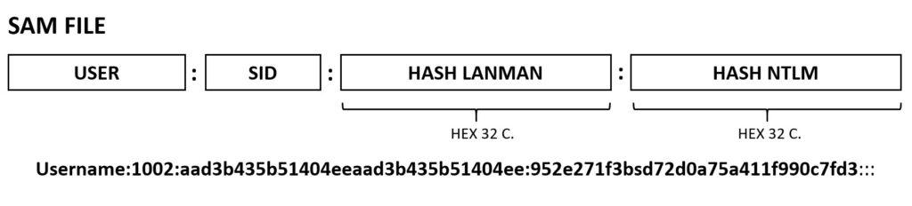

Una de las medidas más importantes de protección que implementa todo sistema operativo es la autenticación. Esta medida implica necesariamente el uso y almacenamiento de contraseñas.
Contraseñas resumidas, no cifradas
Aunque coloquialmente se hable de contraseñas cifradas, en realidad las contraseñas no se cifran, sino que se resumen.
El resumen de una contraseña es un valor obtenido a partir de la contraseña original mediante un algoritmo de resumen. Este valor se almacena en el sistema y se compara con el resumen de la contraseña que proporciona el usuario al intentar autenticarse. Si los dos resúmenes coinciden, el usuario se autentica correctamente.
En Windows las contraseñas de los usuarios locales se almacenan en el fichero SAM (Security Account Manager). Podemos encontrar el fichero SAM en windows/system32/config/SAM o en winnt/system32/config/SAM. Como medida de protección, el fichero SAM al completo está cifrado y además, cuando se está ejecutando Windows también está bloqueado.
El formato de fichero SAM actual se utiliza desde Windows 7 y sigue vigente hasta la actualidad (actualmente la última versión es Windows 11). Contiene los siguientes datos (una fila para cada cuenta de usuario):
A parte del fichero SAM, en algunas técnicas para la obtención de los hashes también se suele utilizar el fichero SYSTEM. Este fichero contiene información sobre la configuración del sistema y es necesario para descifrar los hashes del fichero SAM. Se encuentra en la misma carpeta que el fichero SAM.

Ficheros bloqueados
El fichero SAM está bloqueado mientras Windows está en ejecución.
Estos ficheros se hallan en el directorio del volumen principal C:/Windows/system32/config y se deniega cualquier tipo de interacción con ellos pues su alteración podría suponer una grave afectación al sistema. Es por ello que se necesitan métodos especiales para obtener su información, ya sea mediante la extracción con discos de arranque o con herramientas especializadas que se indican a continuación.
Primero se debe obtener una copia de estos ficheros y luego se puede proceder a su análisis.
Para obtener un volcado de la memoria RAM de un sistema en ejecución se puede utilizar la herramienta Mimikatz, pwdump o Impacket.
Mimikatz permite obtener los hashes de las contraseñas almacenadas en la memoria RAM del sistema, lo que puede ser útil para realizar ataques de fuerza bruta o para obtener las contraseñas de los usuarios del sistema.
# Mimikatz
C:\mimikatz.exe
lsadump::sam /system:C:\Windows\system32\config\SYSTEM /sam:C:\Windows\system32\config\SAM
pwdump es una herramienta que permite extraer los hashes de las contraseñas almacenadas en el fichero SAM de un sistema Windows.
# pwdump
C:\pwdump8.exe -sam C:\Windows\system32\config\SAM -system C:\Windows\system32\config\SYSTEM
Impacket es una colección de herramientas que permiten interactuar con sistemas Windows y realizar ataques.
# Extracción del Registro en Windows
C:\reg save hklm\sam C:\sam
C:\reg save hklm\system C:\system
# Uso de Impacket en Kali Linux
$> impacket-secretsdump -sam <fichero_sam> -system <fichero_system> LOCAL
Una vez obtenidos los hashes de las contraseñas del archivo SAM, es necesario utilizar herramientas especializadas como SamInside, Ophcrack o John The Ripper para atacar las contraseñas y recuperar las contraseñas originales.
Estas herramientas permiten recuperar las contraseñas almacenadas en el fichero SAM mediante ataques de fuerza bruta, ataques de diccionario o bien mediante el uso de tablas rainbow.
Es posible que en sistemas Windows Server se utilice una política de seguridad que impida la extracción de los hashes de las contraseñas. En estos casos, es necesario utilizar técnicas de escalada de privilegios para obtener los permisos necesarios para extraer los hashes de las contraseñas.
El método de las Rainbow Tables o Tablas Arcoíris consiste en emplear unas tablas especiales que contienen pares de contraseñas y hashes precalculados que se denominan cadenas arcoíris. El sistema consiste en comprobar si el hash objetivo forma parte de alguna de estas cadenas, es decir, comprobar si el hash está en la tabla.
Este método podría parecer muy simple si no fuera porqué el formato de las tablas rainbow no es en texto plano, y tanto para su creación como para su sistema de búsqueda (optimizado) se emplean algoritmos especiales que nada tienen que ver con el método de fuerza bruta.
Para conocer más sobre su contenido así como para ver la explicación del algoritmo se recomienda las siguientes páginas:
Como la comprobación se efectúa directamente hash objetivo contra hash de la tabla la velocidad es muchísimo mayor que con la fuerza bruta. Si el hash de la contraseña objetivo se halla en la tabla arcoíris es posible obtener el resultado en unos pocos minutos u horas.
La herramienta por antonomasia para hacer tareas con las Rainbow Tables es Rainbowcrack, aunque en realidad se compone de varias herramientas. Otra herramienta que nos permite trabajar con tablas arcoíris, de forma gráfica, es Ophcrack.
Las tablas arcoíris se pueden generar en Kali Linux con una herramienta especial (rtgen), aunque lo recomendando es buscarlas y descargarlas de Internet. Las tablas arcoiris se pueden encontrar en diferentes formatos y tamaños, dependiendo de la longitud de las contraseñas y del algoritmo de cifrado utilizado.
Tablas arcoíris
Las tablas arcoíris ocupan mucho espacio en disco, por lo que es necesario disponer de un disco duro con suficiente capacidad para almacenarlas.
Algunas páginas donde se pueden encontrar y descargar tablas arcoíris son:
En Linux un par de ficheros se encargan de la gestión de usuarios y contraseñas del sistema.
/etc/passwd: Es el más importante, es donde se registran los usuarios del sistema./etc/shadow: Almacena las contraseñas cifradas. El único usuario con permiso de lectura de este fichero es el root.Cada línea de /etc/passwd almacena información sobre un usuario del sistema. Estas líneas tienen una estructura similar a la que se muestra a continuación:
usuario:x:1000:1000:NombreUsuario:DescripciónUsuario:/home/usuario:/bin/bash
/etc/shadow.En /etc/shadow se almacenan las contraseñas cifradas de los usuarios. Cada línea de /etc/shadow almacena información sobre un usuario del sistema. Estas líneas tienen una estructura similar a la que se muestra a continuación:
usuario:HashContraseña:FechaCambio:MinDíasCambio:MaxDíasCambio:DíasAvisoCaducidad:DesactivarCuenta:FechaCaducidad:Reserva
alumno:$6$52450745$k5ka2p8bFuSmoVT1tzOyyuaREkkKBcCNqoDKzYiJL9RaE8yMnPgh2XzzF0NDrUhgrcLwg78xs1w5pJiypEdFX/:18600:0:99999:7:::0
Los primeros caracteres del hash de la contraseña indican el algoritmo de cifrado utilizado. Los algoritmos de cifrado más comunes se pueden consultar en la siguiente dirección: Algoritmos de cifrado de contraseñas en Linux.
En Kali Linux hay una herramienta, hashid, que permite identificar el algoritmo de cifrado utilizado en un hash de contraseña. La herramienta nos proporciona información sobre el algoritmo de cifrado, la longitud del hash y el tipo de hash, además de indicarnos el modo de uso que se debe usar en hashcat (-m) para crackear la contraseña o el formato del hash para usarlo con John The Ripper (-j).
$ hashid -m "HashContraseña"
Igual que en el caso de las tablas arcoíris, para realizar ataques de fuerza bruta o de diccionario es necesario disponer de listas de contraseñas. Estas listas contienen contraseñas comunes, contraseñas filtradas de bases de datos robadas, contraseñas de diccionario, etc.
Las listas de contraseñas se pueden encontrar en diferentes formatos y tamaños, dependiendo de la longitud de las contraseñas y del tipo de ataque que se quiera realizar. Algunas de las listas de contraseñas más conocidas son:
Las listas de contraseñas se pueden utilizar con herramientas como John The Ripper o Hashcat para realizar ataques de fuerza bruta o de diccionario.
Aunque lo más habitual es usar algunas de las herramientas más conocidas para realizar ataques a contraseñas, también es posible realizar estos ataques de forma manual. A continuación se describen algunas de las herramientas más utilizadas para realizar ataques a contraseñas.
CrackStation
CrackStation es un servicio en línea que proporciona una base de datos de hash de contraseñas para ayudar a los usuarios a recuperar contraseñas olvidadas o perdidas.
La base de datos de CrackStation contiene una gran cantidad de hashes de contraseñas previamente descifrados y almacenados en una base de datos de búsqueda rápida. Los usuarios pueden ingresar un hash de contraseña en la base de datos de CrackStation y la herramienta buscará la contraseña correspondiente en texto plano.
A la hora de crackear contraseñas nunca disponemos de tiempo infinito, por lo que es importante la planificación del propio ataque. Para ello, deberemos medir el tiempo que tenemos para el mismo, y en función de éste, limitar nuestras opciones de crackeo a aquellas tipologías de contraseña que creamos más probables de obtener en el tiempo que disponemos.
Ésta no es una tarea sencilla, ya que la tipología de las contraseñas utilizadas puede depender de muchos factores entre los que se encuentra, por ejemplo, el país y el lenguaje de los usuarios de esas contraseñas o la edad media de los mismos, por lo que cuanta más información de contexto tengamos más podremos afinar en nuestra planificación.
Vamos a usar estos hashes de contraseñas obtenidos en una auditoria a equipos Windows para realizar los ataques:
user1:7362:aad3b435b51404eeaad3b435b51404ee:b562d5031359813a06914d562d421acd:::
user2:7787:aad3b435b51404eeaad3b435b51404ee:3b7a5bb9f8a12f74dadb7adf740cf7c1:::
user3:7788:aad3b435b51404eeaad3b435b51404ee:2501dd5aa075d4854559a5ee023df798:::
user4:7789:aad3b435b51404eeaad3b435b51404ee:11cdb1cb2b21aba701d1113fcf6e3c4f:::
user5:7790:aad3b435b51404eeaad3b435b51404ee:722ab3c822cb6a49bf89830bb5ffaea9:::
user6:7800:aad3b435b51404eeaad3b435b51404ee:79aff34e34c1fa16fffc7c6765e23636:::
user7:7801:aad3b435b51404eeaad3b435b51404ee:73366d77424b259794cac80f4e3fc8c9:::
user8:7803:aad3b435b51404eeaad3b435b51404ee:e2ad4eff06322cf9240ab93288fda61c:::
Este formato contiene, para cada línea, los siguientes campos separados por ‘:’
(Usuario):(SID):(hash LM):(hashNTLM):::
Hash LM Windows
(Usuario):(SID):(hash LM):(hashNTLM):::
Como ya hemos visto, el tercer campo (hash en formato LM) es siempre el mismo para todas las entradas (aad3b435b51404eeaad3b435b51404ee). Este hash corresponde con el hash LM de la cadena vacía, e indica que el sistema de donde hemos obtenido las contraseñas tiene deshabilitado los hashes LM (deshabilitado por defecto a partir del Windows Vista), por lo que nos centraremos en el cuarto campo (hash NTLM).
A modo de ejemplo para este post, nos centraremos en el objetivo de obtener las contraseñas que empiecen por un nombre seguido de la fecha de nacimiento, e intentaremos optimizar esta búsqueda mediante las distintas opciones que nos ofrecen las herramientas.
John the Ripper (JtR) es una herramienta popular para descifrar contraseñas. John soporta muchas tecnologías de encriptación para Windows y sistemas de Unix (inluido Mac).
Una característica notable de John es que puede autodetectar la encriptación para formatos comunes. Esto te ahorrará mucho tiempo en investigar los formatos hash y encontrar la herramienta correcta para descifrarlos.
Una buena forma de conocer todas las opciones que nos ofrece John The Ripper es ejecutar el comando john -h que nos mostrará una lista con todas las opciones disponibles.
Para crackear contraseñas con John The Ripper, necesitamos un archivo de texto con los hashes de las contraseñas que queremos crackear. Este archivo debe contener una línea por cada hash, con el siguiente formato:
hash:usuario
Dump contraseñas Linux
Si queremos obtener las contraseñas de los usuarios de un sistema Linux, podemos usar una de las utilidades de John The Ripper, unshadow, que nos permite combinar los ficheros /etc/passwd y /etc/shadow en un único fichero con el formato que necesita John The Ripper.
$ sudo unshadow /etc/passwd /etc/shadow > passwd.hash
Una forma de saber los tipos de hash que soporta John The Ripper es ejecutar el comando john --list=formats que nos mostrará una lista con todos los formatos de hash que soporta.
Ya hemos comentado que John The Ripper es capaz de autodetectar el tipo de hash, pero si queremos forzar un tipo de hash concreto, podemos hacerlo con el modificador --format seguido del tipo de hash que queremos utilizar.
$ john --format=NT ntlm.hash
En este caso, estamos forzando a John The Ripper a utilizar el formato de hash NTLM de Windows.
John soporta varios tipos de ataques, entre los que se incluyen ataques de diccionario, ataques de fuerza bruta y ataques híbridos. Además, John soporta la utilización de reglas para modificar las contraseñas del diccionario y aumentar las posibilidades de éxito.
| Tipo de ataque | Descripción |
|---|---|
| --single | Ataque simple. John The Ripper probará una única contraseña y todas sus posibles combinaciones. |
| --wordlist | Ataque por diccionario. John The Ripper probará todas las contraseñas del diccionario que le indiquemos. |
| --incremental | Ataque por fuerza bruta. John The Ripper probará todas las combinaciones posibles de caracteres. |
| --rules | Ataque por reglas. John The Ripper aplicará reglas a las contraseñas del diccionario. |
En el caso de que queramos probar una única contraseña, podemos hacerlo con el modificador --single seguido de la contraseña que queremos probar.
$ john --format=NT --single=pass1234 ntlm.hash
En este caso, John The Ripper probará únicamente la contraseña pass1234 con todas sus posibles combinaciones.
En el caso de que queramos realizar un ataque por diccionario, podemos hacerlo con el modificador --wordlist seguido del archivo de texto con las contraseñas que queremos probar.
$ john --format=NT --wordlist=/usr/share/john/password.lst ntlm.hash
En este caso, John The Ripper probará todas las contraseñas del archivo /usr/share/john/password.lst.
En el caso de que queramos realizar un ataque por fuerza bruta, podemos hacerlo con el modificador --incremental.
El modo incremental es el modo más poderoso provisto por John. Prueba todas las combinaciones de caracteres posibles como contraseñas.
En este caso podemos indicar qué tipo de caracteres queremos que pruebe John, por ejemplo, si queremos que pruebe todas las combinaciones de 1 a 8 caracteres alfanuméricos, podemos hacerlo con el modificador --incremental=Alnum.
$ john --format=NT --incremental=Alnum ntlm.hash
Los posibles valores para el modificador --incremental los podemos ver con la opción --list=incremental y son:
digits
upper
lower,
El ataques por máscaras permite la creación de una máscara de clases de caracteres que pueden estar en posiciones específicas al construir un candidato a probar.
El modo de máscara es una forma rápida de producir candidatos de contraseña dado un "máscara" que describe cómo deberían ser las palabras.
Una máscara puede consistir en:
Caracteres literales: caracteres que deben estar presentes en una posición específica.
Clases de caracteres: clases de caracteres que pueden estar presentes en una posición específica.
Rangos de caracteres: rangos de caracteres que pueden estar presentes en una posición específica.
Combinaciones de los anteriores.
Operadores de repetición: operadores que controlan cuántas veces se repite un carácter o una clase de caracteres.
Static letters.
Ranges in [aouei] or [a-z] syntax. Or both, [0-9abcdef] is the same as [0-9a-f].
Placeholders that are just a short form for ranges, like ?l which is 100% equivalent to [a-z].
?l lower-case ASCII letters
?u upper-case ASCII letters
?d digits
?s specials (all printable ASCII characters not in ?l, ?u or ?d)
?a full 'printable' ASCII. Note that for formats that don't recognize case (eg. LM), this only includes lower-case characters which is a tremendous reduction of keyspace for the win.
Letras estáticas.
Rangos en la sintaxis [aouei] o [a-z]. O ambos, [0-9abcdef] es lo mismo que [0-9a-f].
Marcadores de posición que son solo una forma abreviada para rangos, como ?l que es 100% equivalente a [a-z].
?l letras ASCII en minúsculas
?u letras ASCII en mayúsculas
?d dígitos
?s especiales (todos los caracteres ASCII imprimibles que no están en ?l, ?u o ?d)
?a ASCII completo 'imprimible'. Tenga en cuenta que para los formatos que no reconocen mayúsculas (por ejemplo, LM), esto solo incluye caracteres en minúsculas, lo que es una reducción tremenda del espacio de claves para la victoria.
$ john --format=NT --mask=?l?l?l?l?l?l?l?l ntlm.hash
Además, se puede usar el modo híbrido, que combina el ataque por diccionario con el ataque por máscaras. En este caso, John The Ripper probará todas las contraseñas del archivo de diccionario indicado con todas las máscaras posibles.
$ john --format=NT --mask=?l?l?l?l?l?l?l?l --wordlist=/usr/share/john/password.lst ntlm.hash
Se pueden usar limitadores de longitud para las máscaras, por ejemplo, si queremos probar todas las contraseñas entre 5 y 8 caracteres que empiecen por pass, podemos hacerlo con el modificador --mask=pass?l -min-len=3 -max-len=5.
En el caso de que queramos realizar un ataque por reglas, podemos hacerlo con el modificador --rules seguido del archivo de texto con las reglas que queremos aplicar.
replacement of certain characters
repeat, delete, or overwrite any characters
removal of words that do not meet the specified criteria (presence or absence of characters or character sets; repeating a character or character set a certain number of times, insufficient or excessive length, etc.)
That is, the rules allow you to change, create new passwords, and also reject password candidates according to certain numerous criteria.
It's a powerful (and fundamentally not that complicated) engine that you might find useful in some unusual situations.
Un ataque basado en reglas es una modificación de alto nivel de los diccionarios, cuando se crean y modifican no solo agregando nuevos símbolos, sino también con operaciones inaccesibles con máscaras, como:
Es decir, las reglas le permiten cambiar, crear nuevas contraseñas y también rechazar candidatos a contraseñas de acuerdo con ciertos numerosos criterios.
Es un motor potente (y fundamentalmente no tan complicado) que puede resultarle útil en algunas situaciones inusuales.
Básicamente, las reglas permiten hacer ataques simples gestionando las variaciones de las contraseñas que se pueden generar a partir de un diccionario.
Si tienes algunas contraseñas descifradas, se almacenan en $JOHN/john.pot. El archivo john.pot no es legible. Para ver su contenido es mejor verlo con el comando
$ john --show mypasswd
En Hashcat, necesitamos un archivo de texto con los hashes de las contraseñas que queremos crackear, a ser posible solo los hashes. Por lo tanto, si partirmos del archivo de ejemplo hashdump.txt, podemos sacar los hashes al archivo ntlm.hash de la siguiente forma:
$ awk –F':' '{ print $4 }' hashdump_con_campos.txt >> solo_hashes.txt
El primer modificador de hashcat que vamos a utilizar es el -m, que nos permite especificar el tipo de hash que vamos a crackear.
Si ejecutamos el comando hashcat -h, veremos que el modificador -m tiene un gran número de opciones, pero para este ejemplo, nos centraremos en el tipo de hash NTLM de Windows, que corresponde al número 1000.
La lista también la podemos consultar en la página oficial de Hashcat en la Wiki Tipos de Hashes para Hashcat
$ hashcat --identify ntlm.hash
Con esta opción, hashcat intenta identificar los tipos de hashes que contiene el archivo ntlm.hash. En nuestro caso, el hash NTLM de Windows, que corresponde al número 1000.
El segundo modificador que vamos a utilizar es el -a, que nos permite especificar el tipo de ataque que vamos a realizar.
| Tipo de ataque | Descripción |
|---|---|
| 0 | Straight - Este ataque es el que conocemos como ataque por diccionario. Haschat comprobara si la contraseña corresponde con alguna de las palabras del diccionario que le pasemos como argumento. |
| 1 | Combination - En este caso, hashcat recibirá dos diccionarios como argumentos, y comprobará si la contraseña corresponde con la combinación de cada uno de los términos del primer diccionario con cada uno de los términos del segundo. |
| 3 | Fuerza bruta - Al contrario de los casos anteriores, en este caso el propio hashcat será el encargado de generar las contraseñas que comprobara contra los hashes. Para esto, se basará en las llamadas máscaras, mediante las cuales podremos indicarle que tipo de contraseñas queremos que genere. |
| 6 | Hybrid Wordlist + Mask - Hashcat nos permite combinar la potencia de los ataques por diccionario y los ataques por fuerza bruta (mask atacks). En los ataques híbridos, podremos generar parte de una contraseña con los términos de un diccionario y completarla mediante máscaras. |
| 7 | Hybrid Mask + Wordlist - Hashcat nos permite combinar la potencia de los ataques por fuerza bruta (mask attacks) y los ataques por diccionario. En los ataques híbridos, podremos generar parte de una contraseña con las máscaras y completarla con los términos de un diccionario |
| 9 | Hybrid Mask + Mask - En este caso, hashcat generará contraseñas mediante la combinación de dos máscaras. |
En nuestro caso, vamos a utilizar el ataque por diccionario, por lo que el comando sería el siguiente:
Para ejecutar esta modalidad de ataque sobre nuestro archivo de hashes NTLM, únicamente necesitaremos decirle a hashcat que el tipo de hashes que contiene el archivo es NTLM (-m 1000) y que queremos ejecutar un ataque por fuerza bruta (-a 3)
hashcat -m 1000 -a 3 ntlm.hash
En este caso, hashcat generará todas las combinaciones posibles de 1 a 12 caracteres, y las comprobará contra los hashes del archivo ntlm.hash. Si alguna de las contraseñas generadas corresponde con alguna de las contraseñas originales, hashcat nos lo indicará.
¿Pero que es una máscara?
Una máscara es un conjunto de reglas que indican como están formadas las contraseñas que queremos generar. Más concretamente, una máscara especificará, para cada posición de la contraseña, el conjunto de caracteres que puede tener.
Cada posición de nuestra máscara puede contener un carácter fijo o un charset, que no es más que un conjunto caracteres.
Al contrario de los caracteres fijos, los charsets irán precedidos del signo de interrogación.
Al igual que con el resto de modificadores, la ayuda de hashcat nos proporciona una lista de los charsets que podemos utilizar en nuestras máscaras, pero para este ejemplo, nos centraremos en los siguientes:
| Charset | Descripción |
|---|---|
| ?l | Minúsculas |
| ?u | Mayúsculas |
| ?d | Dígitos |
| ?s | Símbolos |
| ?a | Minúsculas, mayúsculas, dígitos y símbolos |
| ?b | Espacios |
Ejemplos de ataques utilizando máscaras:
hashcat –m 1000 –a 3 ntlm.hash pass1234
hashcat –m 1000 –a 3 ntlm.hash pass?d?d?d?d
El primer ejemplo comprobaría únicamente la contraseña (pass1234).
El segundo ejemplo, por contra, comprobaría todo el espectro de contraseñas que empezaran por “pass” y cuyos cuatro siguientes caracteres fueran dígitos decimales (pass0000-pass9999)
Si probamos el comando
hashcat –m 1000 –a 3 ntlm.hash ?a?a?a?a?a?a?a?a?a?a?a?a
Estaremos comprobando todas las combinaciones posibles de 12 caracteres, que incluyan letras minúsculas, mayúsculas, dígitos y símbolos.
Además, para no tener que crear una máscara para cada longitud de contraseña que queramos probar, hashcat nos proporciona el argumento –i (–increment), con el que hashcat irá probando desde las n primeras posiciones de la máscara que hayamos especificado con el argumento -increment-min para cada iteración hasta el máximo de caracteres que hayamos especificado con el argumento –increment-max o el tamaño de la máscara en caso de que no se lo hayamos especificado.
./hashcat –m 1000 –a 3 ntlm.ph ?a?a?a?a?a –i –increment—min 2 increment—max 4
En este caso, hashcat probará todas las combinaciones posibles de 2 a 4 caracteres.
Otra opción que nos ofrece hashcat es la posibilidad de utilizar diccionarios para realizar los ataques. Para ello, necesitaremos un archivo de texto con las contraseñas que queremos probar, y le indicaremos a hashcat que queremos utilizar un ataque por diccionario (-a 0) junto con el archivo que contiene los hashes y el archivo que contiene las contraseñas.
Diccionarios
Ya hemos visto anteriormente diferentes fuentes para obtener diccionarios de palabras.
Hay diversas fuentes de donde obtener información útil. Entre ellas podemos encontrar el INE (Instutito Nacional de Estadística) que nos proporciona información sobre los nombre y apellidos más comunes.
hashcat -m 1000 -a 0 ntlm.hash diccionario.txt
En este caso, hashcat comprobará si alguna de las contraseñas del archivo diccionario.txt corresponde con alguna de las contraseñas originales del archivo ntlm.hash.
Hashcat dispone de dos variantes de ataques híbridos, la opción -6 (dict + mask), en la que generará contraseñas añadiendo la máscara al final de cada término de diccionario, y la opción -7 (mask + dict), en los que generará contraseñas añadiendo la máscara al inicio de cada termino.
haschat -m 1000 -a 6 ntlm.hp nombres.dict ?d?d?d?d
En este caso, hashcat generará todas las combinaciones posibles de 4 dígitos y las añadirá al final de cada término del diccionario nombres.dict.
Para ver los resultados de los ataques, hashcat nos proporciona un archivo de texto llamado potfile, en el que se almacenan las contraseñas que ha conseguido crackear. Para ver el contenido de este archivo, podemos utilizar el comando cat:
hashcat -show